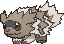
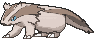
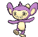
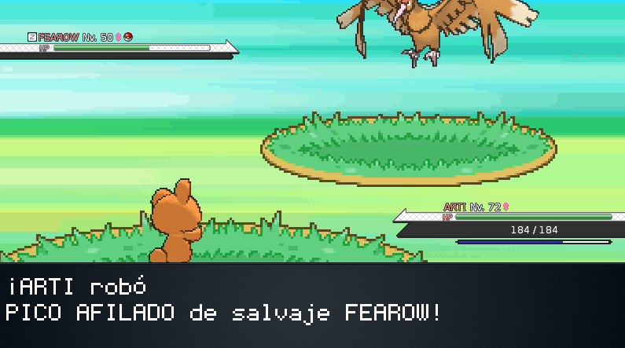
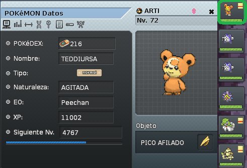
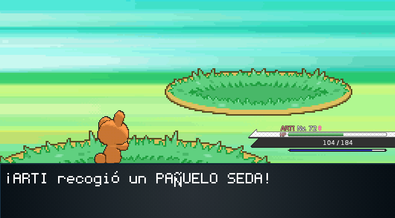

Guia de Items con Pickup by Peechan
¿Cansado de estar pobre? ¿No sabes donde está el changarro? No te preocupes, en esta guia te ayudaremos a engordar tu cartera por medio de la venta de objetos que puedes encontrar usando un pokémon con la habilidad de recogida (pickup). En esta guia hablaremos de que pokémon son los más utiles para farmear y pokémon alternativos que facilitarán tu farmeo de ciertos items. De igual forma hablaremos de los lugares con items más valiosos y como obtenerlos.
Sin más demora, ¡Comenzemos!
Elige tu Pokémon
Primero que nada tienes que contar con cualquier pokémon que tenga la habilidad RECOGIDA (pickup). Dichos pokémon son los siguientes: - Meowth, Teddiursa, Zigzagoon, Linoone, Phanpy y Aipom.
Linoone es el mejor pokémon con recogida en cuestion de stats. Puede aprender truco para robar objetos sin matar.
Teddiursa tiene el mayor ataque de los pokémon con pickup con 80 base.
Meowth es el más popular por tener el movimiento "día de pago" que te permite obtener dinero extra.
** La habilidad Recogida solo funciona si el pokémon está en el primer lugar de tu team y no tiene sosteniendo un item.
** Siempre recuerda que si usarás Meowth, Teddiursa o Phanpy, debes cuidar que no evolucionen cada que suban de nivel, ya que perderá la habilidad..
** También recuerda ponerle el movimiento "LADRÓN" a tu pokémon, ya que en algunas áreas lo necesitarás para robar objetos valiosos.
Ya que tengámos a nuestros pokémon listos, más o menos a un nivel 60, podemos empezar a ir a recoger ítems.
| Nombre | Pokémon |
|---|---|
| Meowth | |
| Teddiursa | |
| Zigzagoon |  |
| Linoone |  |
| Phanpy | |
| Aipom |  |
Como Farmear
Iniciaremos nuestra aventura farmera en Isla Sétima (Sevi Island) que es uno de los lugares en donde se obtienen los objetos más valiosos.
Una vez que lleguemos, ya sea usando vuelo o en barco, nos dirigimos hacia la parte de abajo. En donde veamos a 2 campistas, subiremos por la parte derecha y subiremos unos escalones, justamente en los segundos escalones está una pequeña parte de césped. Ahí es donde comenzaremos.
Demos vueltas en la bicicleta o corriendo hasta que nos salga un Pokémon, recuerda poner a tu poke con recogida en primer lugar.
Ladrón
Una vez que nos salga un pokémon, procederemos a usar LADRÓN. Para robar el objeto que tenga el poke.
En este caso, Fearow lleva pico afilado, te aparecerá un anuncio diciendo que tu pokémon le ha robado el objeto al rival. Habiendo pasado esto, procede a darle click en HUIR.
Una vez que hayamos robado el objeto, nos saldrá nuestro pokémon así. Eso quiere decir que lleva el objeto que acabamos de robar. Le damos click al pokémon para ver el objeto.
Después, le damos click al objeto y le ponemos en quitar. El objeto se irá directamente a tu mochila una vez que sea removido.
Nota Importante
Si te aparecen pokémon de bajo nivel como Phanpy o Larvitar, puedes usar movimientos extras para debilitarlos de un golpe.

Como tu primer pokémon tiene la habilidad RECOGIDA, cuando debilites al rival, podrás encontrar objetos.
